🚨 Mission 07: Extracting Resume Contents with Multimodal Prompts¶
Warning
This course is still in development. That means that the quality is not up to par yet or that it doesn't work as intended.
🕵️♂️ CODENAME: DOCUMENT RESUME RECON¶
⏱️ Operation Time Window:
~45 minutes
🎯 Mission Brief¶
Welcome, Operative. Your previous missions have equipped you with powerful agent orchestration skills, but now it's time to unlock a game-changing capability: multimodal document analysis.
Your assignment, should you choose to accept it, is Document Resume Recon - extracting structured data from any document with precision. While your agents can process text with ease, the real world requires handling PDFs, images, and complex documents daily. Resumes pile up, invoices need processing, and forms require instant digitization.
This mission will transform you from a text-only agent builder into a multimodal expert. You'll learn to configure AI that reads and understands documents like a human analyst - but with AI speed and consistency. By mission's end, you'll have built a complete resume extraction system that integrates with your hiring workflow.
The techniques you learn here will be essential for the advanced data grounding operations in your next mission.
🔎 Objectives¶
In this mission, you'll learn:
- What multimodal prompts are and when to use different AI models
- How to configure prompts with image and document inputs
- How to format prompt outputs as JSON for structured data extraction
- Best practices for prompt engineering with document analysis
- How to integrate multimodal prompts with Agent Flows
🧠 Understanding multimodal prompts¶
What makes a prompt "multimodal"?¶
Traditional prompts work with text only. But multimodal prompts can process multiple types of content:
- Text: Written instructions and content
- Images: Photos, screenshots, charts, and diagrams (.PNG, .JPG, .JPEG)
- Documents: Invoices, resumes, forms (.PDF)
This capability opens up powerful scenarios like analyzing resumes, processing invoices, or extracting data from forms.
Why multimodal matters for your workflows¶
Every day, your organization faces these document processing challenges:
- Resume screening: Manually reading hundreds of resumes takes valuable time
- Invoice processing: Extracting vendor details, amounts, and dates from varied document formats
- Form analysis: Converting paper forms into digital data
Multimodal prompts eliminate these bottlenecks by combining AI's language understanding with visual analysis capabilities. This gives your AI the ability to process documents as effectively as text.
Common business scenarios¶
Here are some examples of how multimodal prompts can be applied:
| Scenario | Task | Example Output Fields |
|---|---|---|
| Resume screening | Extract candidate name, email, phone, current title, years of experience, and key skills. | Candidate Name, Email Address, Phone Number, Current Job Title, Years of Experience, Key Skills |
| Invoice processing | Extract vendor information, invoice date, total amount, and line items from this invoice. | Vendor Name, Invoice Date, Total Amount, Invoice Line Items |
| Form analysis | Analyze this application form and extract all filled fields. | Field Name (e.g., Applicant Name), Entered Value (e.g., John Doe), ... |
| ID document verification | Extract name, ID number, expiration date, and address from this identification document. Verify that all text is clearly readable and flag any unclear sections. | Full Name, Identification Number, Expiration Date, Address, Unclear Sections Flag |
⚙️ Model selection in AI Builder¶
AI Builder offers different models optimized for specific tasks. Understanding which model to use is crucial for success.
Accurate as of September 2025
AI Builder models are updated regularly, so check the latest AI Builder model settings documentation for current model availability.
Model comparison¶
All of the following models support vision and document processing
| Model | 💰Cost | ⚡Speed | ✅Best for |
|---|---|---|---|
| GPT-4.1 mini | Basic (most cost-effective) | Fast | Standard document processing, summarization, budget-conscious projects |
| GPT-4.1 | Standard | Moderate | Complex documents, advanced content creation, high accuracy needs |
| o3 | Premium | Slow (reasons first) | Data analysis, critical thinking, sophisticated problem-solving |
| GPT-5 chat | Standard | Enhanced | Latest document understanding, highest response accuracy |
| GPT-5 reasoning | Premium | Slow (complex analysis) | Most sophisticated analysis, planning, advanced reasoning |
Temperature settings explained¶
Temperature controls how creative or predictable your AI responses are:
- Temperature 0: Most predictable, consistent results (best for data extraction)
- Temperature 0.5: Balanced creativity and consistency
- Temperature 1: Maximum creativity (best for content generation)
For document analysis, use temperature 0 to ensure consistent data extraction.
📊 Output formats: Text vs JSON¶
Choosing the right output format is critical for downstream processing.
When to use text output¶
Text output works well for:
- Human-readable summaries
- Simple classifications
- Content that doesn't need structured processing
When to use JSON output¶
JSON output is essential for:
- Structured data extraction
- Integration with databases or systems
- Power Automate flow processing
- Consistent field mapping
JSON best practices¶
- Define clear field names: Use descriptive, consistent naming
- Provide examples: Include sample output and values for each field
- Specify data types: Include examples for dates, numbers, and text
- Handle missing data: Plan for null or empty values
- Validate structure: Test with various document types
Document quality considerations¶
- Resolution: Ensure images are clear and readable
- Orientation: Rotate documents to proper orientation before processing
- Format support: Test with your specific document types (PDF, JPG, PNG)
- Size limits: Be aware of file size restrictions in your environment
Performance optimization¶
- Choose appropriate models: Upgrade models only when needed
- Optimize prompts: Often, shorter, clearer instructions perform better
- Error handling: Plan for documents that can't be processed
- Monitor costs: Different models consume different amounts of AI Builder credits
🧪 Lab 7: Building a resume extraction system¶
Time to put your multimodal knowledge into practice. You'll build a comprehensive resume extraction system that analyzes candidate documents and transforms them into structured data for your hiring workflow.
Prerequisites to complete this mission¶
-
You'll need to either:
- Have completed Mission 06 and have your multi-agent hiring system ready
- Download sample resume documents from Test Resumes
7.1 Create a multimodal prompt¶
Your first objective: create a prompt capable of analyzing resume documents and extracting structured data.
-
Sign in to Copilot Studio and select Tools from the left navigation.
-
Select + New tool, then select Prompt.
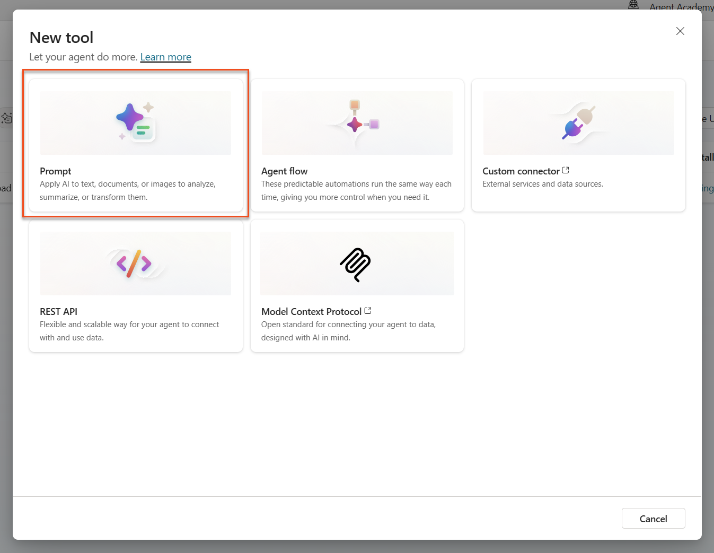 -
Rename the prompt from the default timestamp name (E.g. Custom prompt 09/04/2025, 04:59:11 PM) to
Summarize Resume.
-
In the Instructions field, add this prompt:
You are tasked with extracting key candidate information from a resume and cover letter to facilitate matching with open job roles and creating a summary for application review. Instructions: 1. Extract Candidate Details: - Identify and extract the candidate’s full name. - Extract contact information, specifically the email address. 2. Create Candidate Summary: - Summarize the candidate’s profile as multiline text (max 2000 characters) with the following sections: - Candidate name - Role(s) applied for if present - Contact and location - One-paragraph summary - Experience snapshot (last 2–3 roles with outcomes) - Key projects (1–3 with metrics) - Education and certifications - Top skills (Top 10) - Availability and work authorization Guidelines: - Extract information only from the provided resume and cover letter documents. - Ensure accuracy in identifying all details such as contact details and skills. - The summary should be concise but informative, suitable for quick application review. Resume: /document CoverLetter: /textUse Copilot assistance
You can use "Get started with Copilot" to generate your prompt using natural language. Try asking Copilot to create a prompt to summarize a resume!
-
Configure the input parameters:
Parameter Type Name Sample Data Resume Image or document Resume Upload a sample resume from the test-data folder CoverLetter Text CoverLetter Here is a Resume! -
Select Test to see the initial text output from your prompt.

7.2 Configure JSON output¶
Now you'll convert the prompt to output structured JSON data instead of plain text.
-
Add this JSON format specification to the end of your prompt instructions: Output Format: Provide the output in valid JSON format with the following structure:
-
Change the Output setting from "Text" to JSON.
-
Select Test again to verify the output is now formatted as JSON.
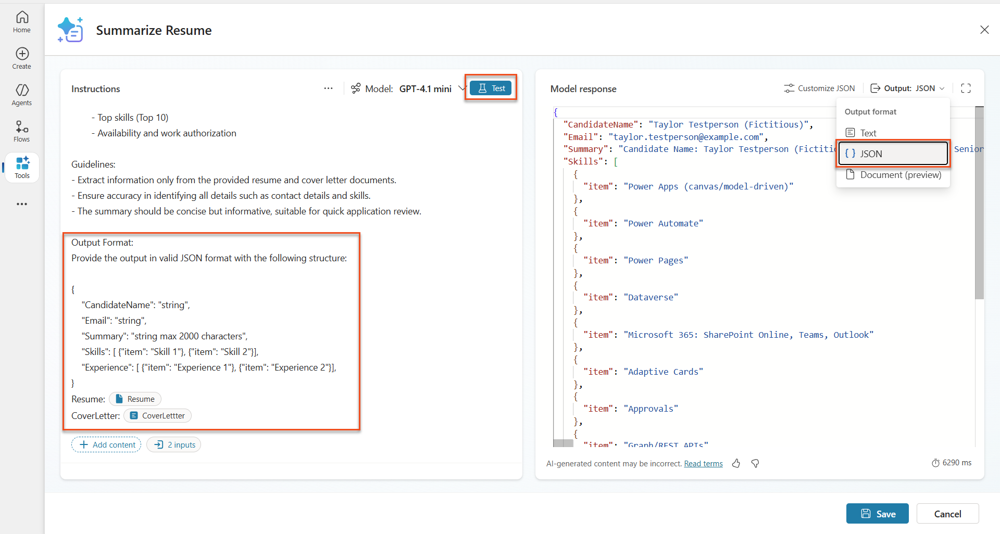 -
Optional: Experiment with different AI models to see how outputs vary, then return to the default model.
-
Select Save to create the prompt.
-
In the Configure for use in Agent dialog, select Cancel.
Why we're not adding this as a tool yet
You'll use this prompt in an Agent Flow rather than directly as a tool, which gives you more control over the data processing workflow.
7.3 Add prompt to an Agent Flow¶
You'll create an Agent Flow that uses your prompt to process resumes stored in Dataverse.
Agent Flow Expressions
It is very important that you follow the instructions for naming your nodes and entering expressions exactly because the expressions refer to the previous nodes using their name! Refer to the Agent Flow mission in Recruit for a quick refresher!
-
Navigate to your Hiring Agent inside Copilot Studio
-
Select the Agents tab, and select the child Application Intake Agent

-
Inside the Tools panel, Select + Add → + New tool → Agent flow
-
Select the When an agent calls the flow node, use + Add an input to add the following parameter:
Type Name Description Text ResumeNumber Be sure to use [ResumeNumber]. This must always start with the letter R 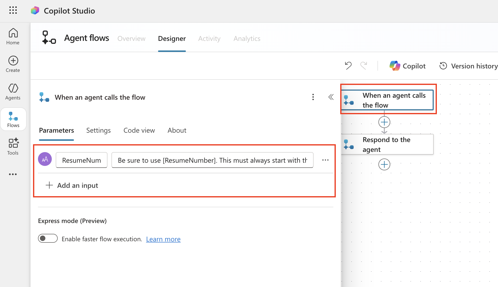
-
Select the + Insert action icon below the first node, search for Dataverse list rows, and select the List rows action

-
Select the ellipsis (...) on the List rows node, and select Rename to
Get Resume Record, and then set the following parameters:Property How to Set Value Table name Select Resumes Filter rows Dynamic data (thunderbolt icon) ppa_resumenumber eq 'ResumeNumber'Replace ResumeNumber with When an agent calls the flow → ResumeNumberRow count Enter 1 Optimize those queries!
When using this technique in production, you should always limit the columns being selected to only those required by the Agent Flow.

-
Select the + Insert action icon below the Get Resume Record node, search for Dataverse download, and select the Download a file or an image action.
Pick the correct action!
Be sure not to select the action that ends in "from selected environment"
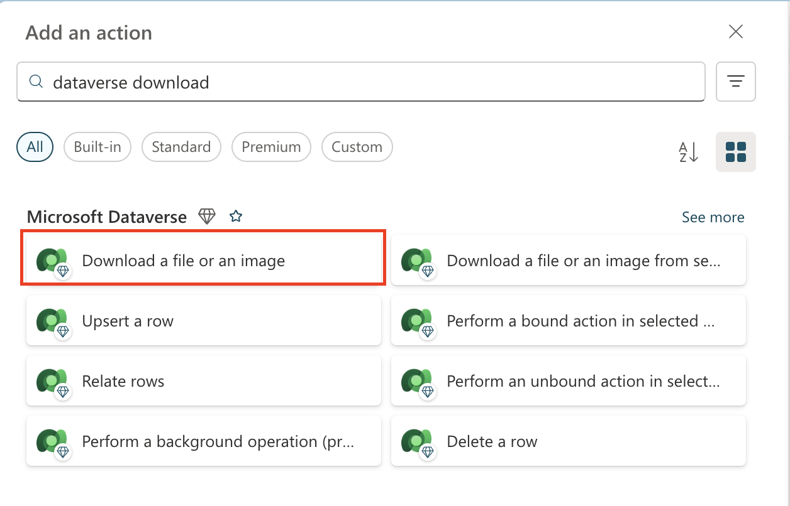
-
As before, rename the action
Download Resume, and then set the following parameters:Property How to Set Value Table name Select Resumes Row ID Expression (fx icon) first(body('Get_Resume_Record')?['value'])?['ppa_resumeid']Column name Select Resume PDF 
-
Now, select the + Insert action icon below Download Resume, under AI capabilities, select Run a prompt,

-
Rename the action to
Summarize Resumeand set the following parameters:Property How to Set Value Prompt Select Summarize Resume CoverLetter Expression (fx icon) first(body('Get_Resume_Record')?['value'])?['ppa_coverletter']Resume Dynamic data (thunderbolt icon) Download Resume → File or image content 
Prompt Parameters
Notice how the parameters you are filling out are the same ones that you configured as input parameters when you created your prompt.
7.4 Create candidate record¶
Next, you need to take the information that the Prompt gave you and create a new candidate record if it doesn't already exist.
-
Select the + Insert action icon below the Summarize Resume node, search for Dataverse list, and select the List rows action
-
Rename the node as
Get Existing Candidate, and then set the following parameters:Property How to Set Value Table name Select Candidates Filter rows Dynamic data (thunderbolt icon) ppa_email eq 'Email'ReplaceEmailwith Summarize Resume → EmailRow count Enter 1 
-
Select the + Insert action icon below the Get Existing Candidate node, search for Control, select See more, and then locate the Condition action
-
In the condition properties, set the following condition:
Condition Operator Value Expression (fx icon): length(outputs('Get_Existing_Candidate')?['body/value'])is equal to 0 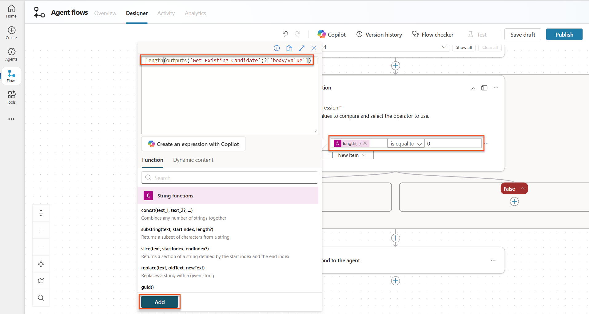
-
Select the + Insert action icon in the True branch, search for Dataverse add, and select the Add a new row action.
-
Rename the node as
Add a New Candidate, and then set the following parameters:Property How to Set Value Table name Select Candidates Candidate Name Dynamic data (thunderbolt icon) Summarize Resume → CandidateNameEmail Dynamic data (thunderbolt icon) Summarize Resume → Email
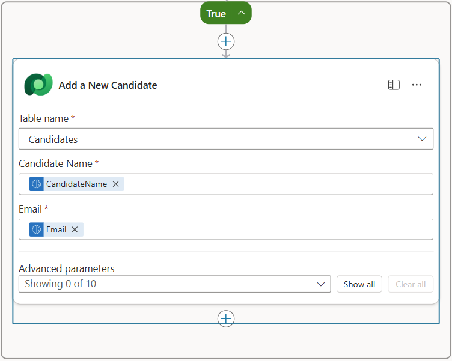
7.5 Update resume and configure flow outputs¶
Complete the flow by updating the resume record and configuring what data to return to your agent.
-
Select the + Insert action icon below the condition, search for Dataverse update, and select the Update a row action
-
Select the title to rename the node as
Update Resume, select Show all, and then set the following parameters:Property How to Set Value Table name Select Resumes Row ID Expression (fx icon) first(body('Get_Resume_Record')?['value'])?['ppa_resumeid']Summary Dynamic data (thunderbolt icon) Summarize Resume → Text Candidate (Candidates) Expression (fx icon) concat('ppa_candidates/',if(equals(length(outputs('Get_Existing_Candidate')?['body/value']), 1), first(outputs('Get_Existing_Candidate')?['body/value'])?['ppa_candidateid'], outputs('Add_a_New_Candidate')?['body/ppa_candidateid']))
-
Select the Respond to the agent node and then use + Add an output to configure:
Type Name How to Set Value Description Text CandidateNameDynamic data (thunderbolt icon) Summarize Resume → See more → CandidateName The [CandidateName] given on the Resume Text CandidateEmailDynamic data (thunderbolt icon) Summarize Resume → See more → Email The [CandidateEmail] given on the Resume Text CandidateNumberExpression (fx icon) if(equals(length(outputs('Get_Existing_Candidate')?['body/value']), 1), first(outputs('Get_Existing_Candidate')?['body/value'])['ppa_candidatenumber'], outputs('Add_a_New_Candidate')?['body/ppa_candidatenumber'])The [CandidateNumber] of the new or existing candidate Text ResumeSummaryDynamic data (thunderbolt icon) Summarize Resume → See more → body/responsev2/predictionOutput/structuredOutput The resume summary and details in JSON form 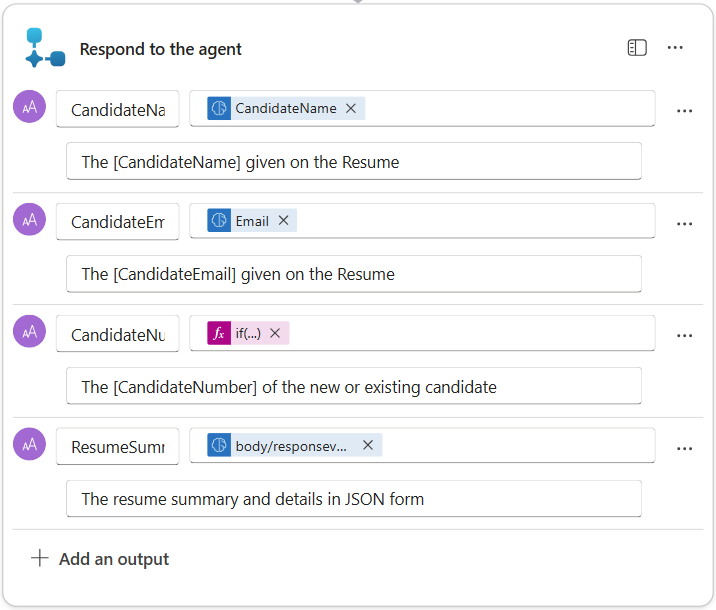
-
Select Save draft on the top right. Your Agent Flow should look like the following
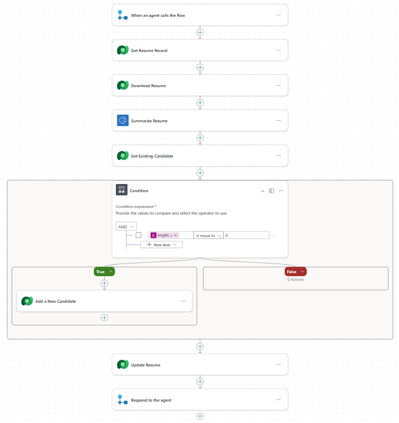 -
Select the Overview tab, Select Edit on the Details panel
- Flow name:
Summarize Resume -
Description:
- Flow name:
-
Select Save
-
Select the Designer tab again, and select Publish.
7.6 Connect the flow to your agent¶
Now you'll add the flow as a tool and configure your agent to use it.
-
Open your Hiring Agent inside Copilot Studio
-
Select the Agents tab, and open the Application Intake Agent
-
Select the Tools panel, and Select + Add a tool - > Flow -> Summarize Resume (Agent Flow)
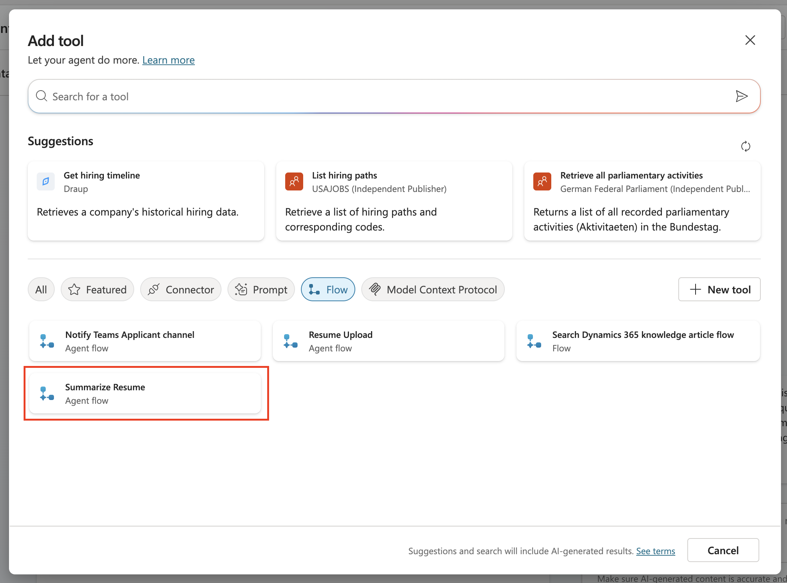
-
Select Add and configure
-
Configure the tool settings as follows:
Setting Value Description Summarize an existing Resume stored in Dataverse using a [ResumeNumber] as input, return the [CandidateNumber], and resume summary JSON When this tool may be used Only when referenced by topics or agents -
Select Save

-
If you select Tools inside the Hiring Agent, you will now see both of our tools showing that they are usable by the Application Intake Agent.
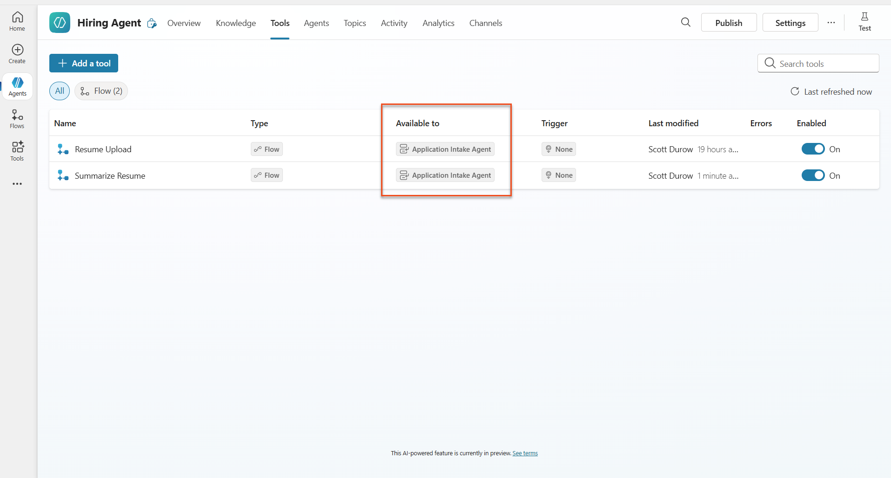 -
Navigate to the Application Intake Child agent Instructions, and modify the Post-Upload step to be the following:
2. Post-Upload Processing - After uploading, be sure to also output the [ResumeNumber] in all messages - Pass [ResumeNumber] to /Summarize Resume - Be sure to use the correct value that will start with the letter R. - Be sure to also output the [CandidateNumber] in all messages - Use the [ResumeSummary] to output a summary of the processed Resume and candidateReplace
/Summarize Resumeby inserting a reference to the Summarize Resume agent flow by typing forward slash (/)or selecting/Summarizeto insert the reference.

-
Select Save.
7.7 Test your agent¶
Test your complete multimodal system to ensure everything works correctly.
-
Start testing:
- Select Test to open the test panel
-
Type:
Here is a candidate Resume -
Upload one of the sample resumes from Test Resumes
-
Verify the results:
- Once you send the message and resume, check that you receive a Resume Number (format: R#####)
- Verify you get a Candidate Number and summary
- Use the activity map to see both the Resume upload tool and Summarize Resume tool in action, and the outputs of the Summary Prompt are received by the agent:

-
Check data persistence:
- Navigate to Power Apps
- Open Apps → Hiring Hub → Play
- Go to Resumes to verify the resume was uploaded and processed. It should have both summary information and an associated candidate record.
- Check Candidates to see the extracted candidate information
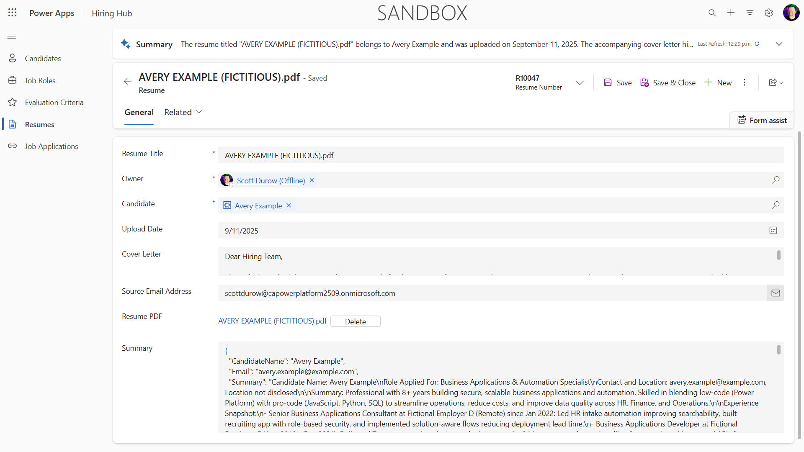 - When you run the process again, it should use the existing Candidate (matched on the email extracted from the resume) instead of creating a new one.
Troubleshooting
- Resume not processing: Ensure the file is a PDF and under size limits
- No candidate created: Check that the email was extracted correctly from the resume
- JSON format errors: Verify your prompt instructions include the exact JSON structure
- Flow errors: Check that all Dataverse connections and expressions are configured correctly
Production readiness¶
Although not part of this mission, to make this agent flow production ready you might also consider the following:
- Error handling - If the Resume Number was not found, or the prompt failed to parse the document, error handling should be added to return a clear error to the agent.
- Updating existing Candidates - The candidate is found using the email, then the name could be updated to match that on the resume.
- Splitting the Resume summarization and the Candidate creation - This functionality could be split into smaller agent flows to make them easier to maintain, and then the agent given instructions to use them in turn.
🎉 Mission Complete¶
Excellent work, Operative! Document Resume Recon is now complete. You've successfully mastered multimodal prompts and can now extract structured data from any document with precision.
Here's what you've accomplished in this mission:
✅ Multimodal prompt mastery
You now understand what multimodal prompts are and when to use different AI models for optimal results.
✅ Document processing expertise
You've learned to configure prompts with image and document inputs, and format outputs as JSON for structured data extraction.
✅ Resume extraction system
You've built a complete resume extraction system that processes candidate documents and integrates with your hiring workflow.
✅ Best practices implementation
You've applied best practices for prompt engineering with document analysis and integrated multimodal prompts with Agent Flows.
✅ Foundation for advanced processing
Your enhanced document analysis capabilities are now ready for the advanced data grounding features we'll add in upcoming missions.
🚀 Next up: In Mission 08, you'll discover how to enhance your prompts with real-time data from Dataverse, creating dynamic AI solutions that adapt to changing business requirements.
⏩ Move to Mission 08: Enhanced prompts with Dataverse grounding
📚 Tactical resources¶
📖 Add text, image, or document input to your prompt
📖 Process responses with JSON output
📖 Model selection and temperature settings